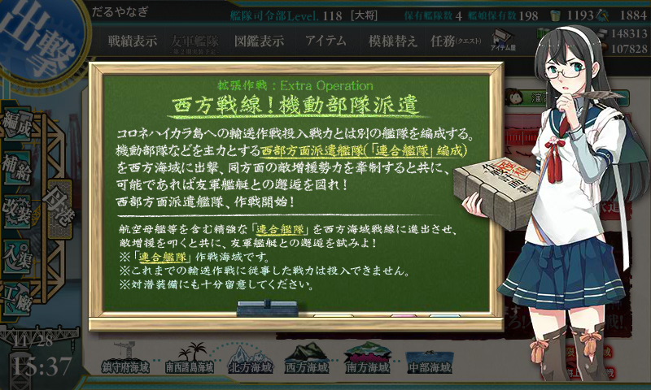
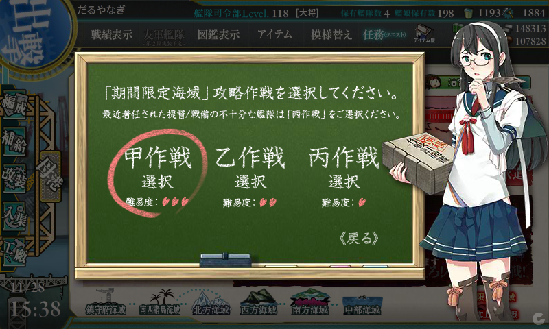
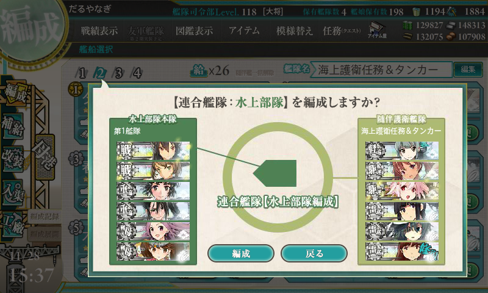
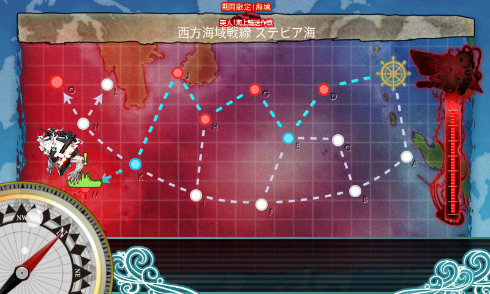
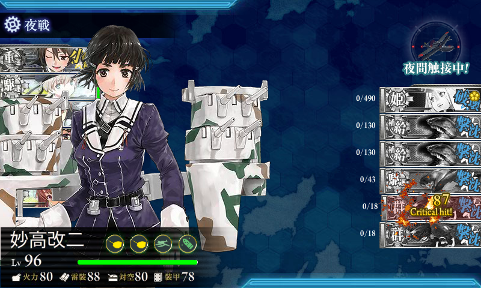
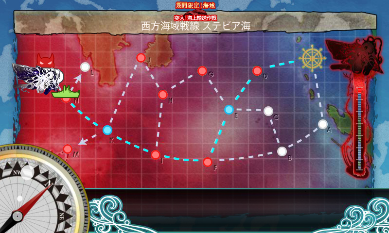
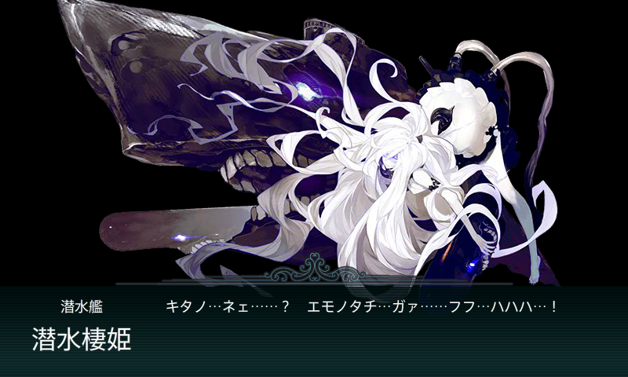
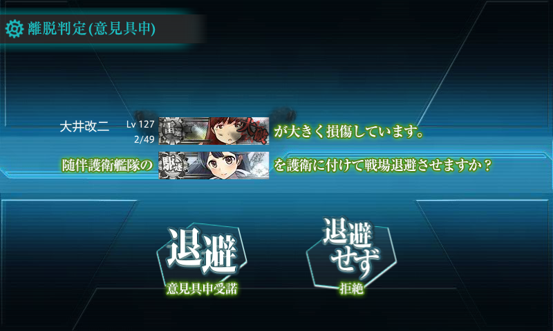
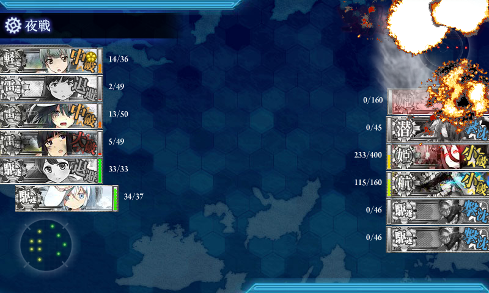
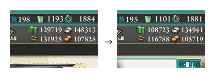

艦これ 2015 秋イベント E-4 西方海域戦線 ステビア海
公開日：

そろそろ本気出さないと、掘りまで完了できない……＞＜

難易度は【甲作戦】。「熟練搭乗員」と「Fw190T改」は多少資源を浪費してでも手に入れる価値があると思った（次にいつゲットできるかわからんしな

連合艦隊は【水上部隊】を選択。【水上部隊】だとギミック（下記）の解除は要らんのか？ よくわからんけどやっておこう。
ギミック

J と M の旗艦を潰すことで、ボスが弱体化するとかしないとか。まぁ、そんなに手間はかからんだろうと思って挑戦したんだが……
- D：A勝利 → E → G：S勝利 → H：S勝利 → J：A勝利（支援なし、以下同）
- D：A勝利 → E → G：S勝利 → H：A勝利 → J：A勝利
- D：S勝利 → E → G：S勝利 → H：S勝利 → J：A勝利
- D：A勝利 → E → G：A勝利 → H：B勝利
- D：S勝利 → E → G：A勝利 → H：A勝利
- D：S勝利 → E → G：S勝利 → H：A勝利 → J：A勝利
- D：S勝利 → E → G：S勝利 → H：A勝利
- D：S勝利 → E → G：S勝利 → H：S勝利 → J：S勝利 → K → M：S勝利（支援あり）
なかなか編成を見つけられず、8戦もする羽目になった／(^o^)＼

敗因は……PT小鬼が思った以上にうざかった……
- 第一艦隊
- 大和：主砲、副砲、三式弾、水偵
- 武蔵：主砲、副砲、三式弾、水偵
- 長良：副砲、対潜セット（ソナー、爆雷）
- 由良：副砲、対潜セット
- 隼鷹：艦戦、艦戦、艦攻、彩雲
- 龍驤：艦戦、艦戦、艦攻、対潜哨戒機
- 第二艦隊
- 足柄：副砲×2、三式弾、夜偵
- Z1：主砲×2、WG42(Wurfgerät 42)
- 榛名：主砲、副砲、三式弾、夜偵
- 妙高：副砲×2、三式弾、夜偵
- 能代：主砲、水偵
- リベッチオ：主砲×2、WG42(Wurfgerät 42)
ルート固定のためにイタリア艦が必要らしい。戦艦は使い切っていたので、駆逐艦で代用。でも、ぶっちゃけ多少編成をいじるより、道中支援を出した方が早かった（ぉ
ゲージ破壊

E の能動分岐で下ルートを選択。H → J 固定のイタリア艦は不要なので、他の割と育っている駆逐艦にスイッチ。装備・編成を対地攻撃から対潜攻撃へ変更しておく。

怖い((((；ﾟДﾟ)))ｶﾞｸﾌﾞﾙ
- D：S勝利 → E → F：S勝利 → I：A勝利 → K → N：S勝利 → N → G（ボス）：B勝利（道中支援のみ、以下同）
- D：S勝利 → E → F：S勝利 → I：S勝利 → K → N：S勝利 → N → G（ボス）：S勝利
- D：S勝利 → E → F：S勝利 → I：S勝利 → K → N：S勝利 → N → G（ボス）：B勝利（「龍驤」退避）
- D：S勝利 → E → F：S勝利 → I：A勝利 → K → N：S勝利 → N → G（ボス）：S勝利（「北上」退避）
- D：S勝利 → E → F：S勝利（「武蔵」大破撤退）
- D：S勝利 → E → F：S勝利 → I：S勝利 → K → N：S勝利 → N → G（ボス）：S勝利（ゲージ削り切る）
- D：S勝利 → E → F：S勝利 → I：A勝利 → K → N：S勝利 → N → G（ボス）：A勝利（道中・決戦支援、「大井」退避）

「艦隊司令部施設」があると便利かも。

さすがに制空担当艦の退避では痛い目にあった（3戦目のB勝利）が、それ以外なら退避艦を出していても S 勝利がとれる。
最終編成はこんな感じ。
- 第一艦隊
- 隼鷹：艦戦、艦戦、艦攻、艦隊司令施設
- 大和：主砲、主砲、徹甲弾、水偵
- 武蔵：主砲、主砲、徹甲弾、水偵
- 長良：副砲、対潜セット（ソナー、爆雷）
- 由良：副砲、対潜セット
- 龍驤：艦戦、艦戦、艦攻、彩雲
- 第二艦隊
- 夕張：対潜セット
- 駆逐：主砲、対潜セット（護衛退避で入れ替え）
- 駆逐：主砲、対潜セット
- 北上：副砲×2、甲標的
- 大井：副砲×2、甲標的
- 木曾：副砲×2、甲標的
第二艦隊の3隻目まででボスの潜水艦を殺し、雷巡の連撃で残りを掃討するイメージ。
（＝＝？ pic.twitter.com/TA38CRhIX4
— だるやなぎ（LINE スタンプ販売中） (@daruyanagi) 2015, 11月 28ラストアタックでネコ食らって一度やり直したのは秘密。
掘り
- D：S勝利 → E → F：S勝利 → I：S勝利 → K → N：S勝利 → N → G（ボス）：S勝利
- D：S勝利 → E → F：S勝利 → I：S勝利 → K → N：S勝利 → N → G（ボス）：S勝利
- D：S勝利 → E → F：S勝利 → I：A勝利 → K → N：S勝利 → N → G（ボス）：S勝利
- D：S勝利 → E → F：S勝利 → I：S勝利 → K → N：S勝利 → N → G（ボス）：S勝利
- D：S勝利 → E → F：S勝利 → I：A勝利 → K → N：S勝利 → N → G（ボス）：S勝利
道中支援のみ、毎回出した。S 勝利で安定。
ぴゃーーーーーーーーーーーーーーーーーーーーーーーーーーーー！ pic.twitter.com/OuuyRkIfJL
— だるやなぎ（LINE スタンプ販売中） (@daruyanagi) 2015, 11月 28S 勝利8回目でゲット。

消費は、燃料21,000、弾薬15,000、鋼材13,000、ボーキサイト2,000、バケツは92個消費。結構運がよかった……。